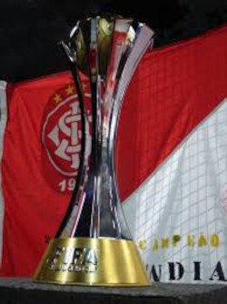

Foi fundado em 4 de abril de 1909 pelos irmãos Poppe, com o objetivo de ser uma instituição democrática e sem preconceitos. Com o objetivo de ser o CLUBE DO POVO, foi um clube criado para todos poderem jogar e praticar football

A primeira taça veio em 1913, no Campeonato Metropolitano de Porto Alegre.
Logo em sequência o sport club internacional foi se acostumando a levantar taça, sendo assim o únido clube do RS
a ganhar por oito(8) vezes consecutivas o campeonato gaúcho.
Primeira década dourada do Internacional, os anos 1940 foram um marco para a essência do coloradismo. Época de ídolos eternos como Tesourinha e Carlitos, de supremacia no Gre-Nal, de Eucaliptos lotado, de torcedores folclóricos como Vicente Rao e Charuto. Ou, simplesmente, época de Rolo Compressor! A supremacia foi total no futebol gaúcho, nada menos que oito títulos estaduais em 10 anos. Pela primeira vez um time seria hexacampeão do Rio Grande do Sul.

Primeiro clube gaúcho a ganhar o Brasileirão, sendo uma delas invicto (sendo assim o único clube brasileiro a ganhar um brasileirão invito até os dias de hoje.)

Em 2006 em yokohama, o SPORT CLUB INTERNACIONAL fazia mais um feito histórico batendo o temido barcelona de Ronaldinho e Puyol. com gol do Carlos Adriano de Souza Vieira, mais conhecido como Adriano Gabiru, O Inter pintava o mundo de vermelho e se tornava o primeiro campeão MUNDIAL do Rio Grande do Sul.
